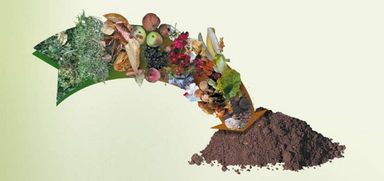

Sustentabilidad
Hacer tierra
Compostaje en casa

Reciclar consiste en convertir un material en otro. Una de las maneras más efectivas de hacerlo es transformar restos orgánicos en tierra enriquecida y reducir la cantidad de basura hasta en un 50%. Esa es la propuesta de compostar en casa. Te acercamos algunas ideas base para que lo puedas comenzar a hacer hoy mismo, sin demoras ni excusas:
¿Qué necesitás? Podés compostar en cualquier espacio: en un departamento con balcón (sí, por más chico que sea), o directamente en la tierra si tenés jardín. Hay diferentes tipos de composteras: un balde, tambor o tacho viejo, cajones de verduras, un pozo o rincón en la tierra. También podés comprar una compostera ya hecha.
Drenaje: Tiene que tener una buena aireación y drenaje, y no debe acumularse agua, esto podría causar malos olores. Podés subir el tacho o cajón a un par de ladrillos para elevarlo del suelo y dejarlo respirar. Si es un balde o tacho debe tener pequeños agujeros.
¿Cómo se hace? Hay diferentes formas de compostar. Te proponemos el modelo “lasagna”, esto es, el intercalado de tres simples capas.
Capa 1: Restos orgánicos.
Capa 2: Si tuvieras acceso a tierra vieja de macetas, es importante colocarla sobre los restos húmedos. Esto ayuda a que no se acerquen moscas y además enriquece más rápidamente la tierra. Sino, podés hacerlo igualmente (no hay excusas).
Capa 3: Material seco (hojas, pasto, restos de poda, flores secas, cartón trozado, ramitas etc). Si no tenés jardín tampoco hay excusas: podés juntar hojas secas de alguna plaza o de la vereda.
Volver a repetir todos los pasos.
Lombrices: Se pueden agregar lombrices en el compost para acelerar el proceso de descomposición de los materiales.
En la compostera NO se ponen: huesos, carnes, grasas, lácteos en general, comida condimentada, excremento de animales domésticos (como perros, gatos, etc.). Tampoco aquello que no sea de origen vegetal como plásticos, metales o vidrios. A los cítricos conviene compostarlos de manera separada ya que contienen gran cantidad de ácidos.
Humedad:
Asegurarse de que no esté ni muy húmedo ni muy seco, sino los orgánicos no se van a descomponer. Si bien es aconsejable que tenga tapa, es importante revisar una vez por semana y aprovechar para revolver cada tanto con un palo o palita. Si tiene olor, está muy húmedo, agregar material seco. Si está muy seco, agregar material húmedo y un poquito de agua.¿Cuándo está listo? No hay un cronómetro para saber cuándo está listo: varía en cantidad de tiempo por el clima y la época del año (pueden ser de 2 a 6 meses).Te das cuenta cuando removés la tierra y tiene olor a bosque, se ve esponjosa y suave.
Si fuiste agregando materiales a lo largo de mucho tiempo, se compostará a distinto ritmo. Así el compost está en diferentes niveles. Una opción es esperar hasta que esté todo listo o se puede zarandear para separar el compost en sus distintos estados (grueso, medio y fino). Es importante que conserves un poco de esta tierra para seguir compostando.
Como sucede con todas las acciones que emprendemos hay un tiempo para aprender y probar. ¡No te desanimes si no te sale bien la primera vez! Ayudar en el proceso natural de conversión de los orgánicos en tierra nos devuelve satisfacción. Colaborar en la reducción de residuos y obtener abono orgánico para tus plantas devuelve el alimento a la tierra.